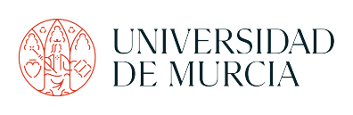

INTRODUCING CONSORTIUM PARTNERS
Open Science Coordinator
Antonio Skarmeta

University of Murcia (UMU) / Dept of Information and Communications Engineering
The University of Murcia is a large University with approximately 38,000 students and 3,500 staff members. The research group participating in this project has extensive experience in security in network infrastructure and the integration of intelligent techniques and agents based middleware platforms. They have been actively involved in several EU projects within FP5-FP7, H2020, and Horizon Europe, demonstrating strong expertise in cybersecurity, data protection, IoT, 5G, and artificial intelligence. UMU has successfully coordinated numerous projects in these funding programmes.
Dr. Antonio Skarmeta is a full professor of Telematics in the Department of Communication and Information Engineering (DIIC) at UMU. He has led several H2020 projects, including OLYMPUS and IoTCrawler, which focus on the use of machine learning techniques and IoT security. Dr. Skarmeta has made significant contributions to the field, with over 200 publications in peer-reviewed journals and more than 300 conference papers. He has also collaborated extensively with industry partners, leading numerous ICT projects with private funding.
Dr. Jose Luis Hernandez Ramos is a Marie Sklodowska-Curie Postdoctoral Fellow at the University of Murcia (UMU) working on the topic of federated learning for cyberattack detection. He has participated in several EU research projects and co-authored more than 60 research papers in the field of cybersecurity and data protection. He has collaborated with EU institutions in different initiatives related to standardization and the definition of a EU cybersecurity taxonomy, and serves as a scientific expert for research agencies in different countries and European bodies.
University of the West of England (UWE), Bristol, UK
The University of the West of England (UWE) is the largest provider of higher education in the southwest of England region, with over 36,000 students and 4,000 staff members. The Department of Computer Science and Creative Technology (CSCT) at UWE is dedicated to solving future global challenges through outstanding learning and world-leading research. They have a strong track record of participation in research projects with international collaboration, including large EU and EPSRC funded projects.
Dr. Djamel Djenouri is an associate professor at CSCT, UWE Bristol, with expertise in IoT, wireless and mobile networks, network security, machine learning, and smart cities. He has led multiple projects as principal investigator (PI) with industrial and international collaboration, focusing on IoT, wireless and mobile networks, network security, and smart cities. Dr. Djenouri has a significant publication record, including over 140 papers in international peer-reviewed journals and conferences, and he holds two national patents.
Dr. Andrew Adamatzky is Professor of Unconventional Computing and Director of the Unconventional Computing Laboratory at CSCT, UWE. He has authored seven books and produced influential artworks published in the atlas 'Silence of Slime Mould'. Dr. Adamatzky is Founding Editor-in-Chief of the 'Journal of Cellular Automata' and 'Journal of Unconventional Computing', and Editor-in-Chief of 'Journal of Parallel, Emergent, and Distributed Systems' and 'Parallel Processing Letters'. He has a significant publication record, with a Google Scholar h-index of 56 and over 14,000 citations.
Siemens SRL / Artificial Intelligence
Siemens is a global leader in healthcare solutions, electric and electronic industry, and sustainable green technologies. Siemens IOT develops hardware and software systems and solutions, with extensive expertise and experience in software development for sectors such as healthcare, energy, mobility, and industrial manufacturing or services.
Anamaria VIZITIU (female) is a Senior Research Engineer in the Artificial Intelligence team at Siemens SRL. She received her PhD in Systems Engineering from Transilvania University of Brasov in 2020, collaborating with Siemens Corporate Research, Princeton, USA during her doctoral studies. Dr. VIZITIU has actively participated in various European, National, and Industry funded R&D projects, focusing on artificial intelligence, machine learning, computer-aided diagnosis in medicine, and data privacy enhancing technologies. She has published over 20 papers in various international journals and conferences.
AIT Austrian Institute of Technology GmbH, Center for Digital Safety & Security
AIT is a non-university Austrian research institute focusing on key infrastructure issues of the future. The Center for Safety & Security at AIT focuses on secure system design for safety and security-critical information systems, including security aspects in Cloud Computing, federated identity management, and cyber defenses of critical infrastructure.
Stephan Krenn (male) is a senior scientist at AIT’s cryptography group, with expertise in privacy-preserving technologies, anonymous authentication, malleable digital signatures, and standardization. He has participated in multiple FP7 and H2020 projects in various roles, including key researcher and coordinator. Dr. Krenn is chair of the IFIP WG11.6 on Identity Management and an active member of the ISO/IEC JTC1/SC27 standardization groups on cryptography and privacy.
Sebastian Ramacher (male) received his PhD in cryptography from Graz University of Technology, Austria, where he worked as a university assistant on post-quantum secure and privacy-preserving public-key cryptography. His research interests include public-key cryptography, post-quantum secure schemes, and their efficient implementation. Dr. Ramacher is a co-designer of the post-quantum secure digital signature scheme Picnic, which is currently a round 3 candidate in the NIST post-quantum cryptography project.